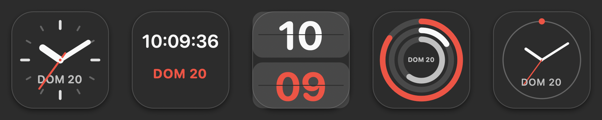
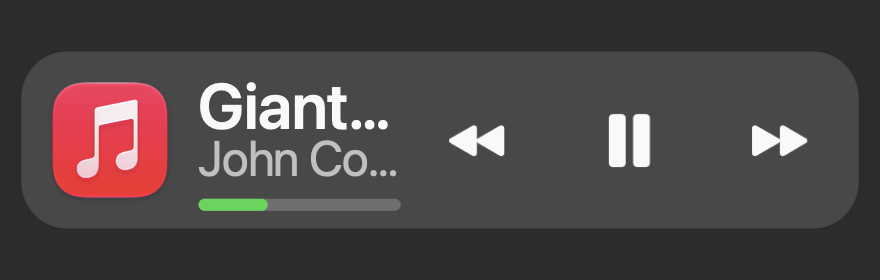
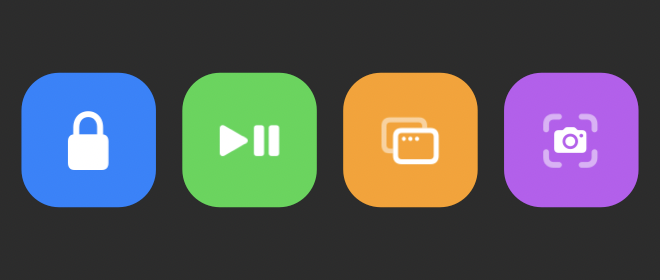
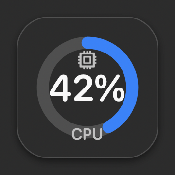
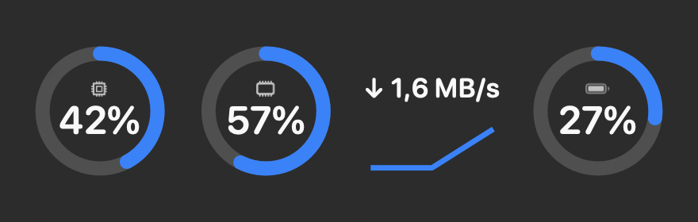
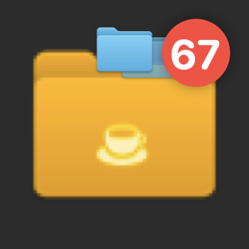
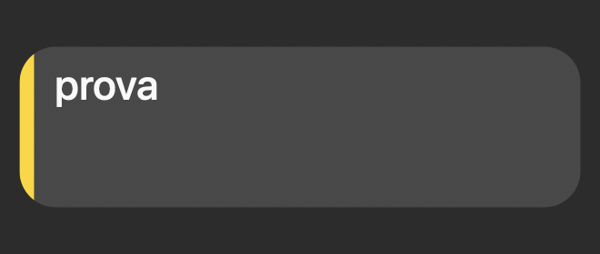

Three layers, no fake Dock
The Dock is a protected system process: you cannot inject code into it. But macOS leaves two doors open, and both of them are public API.
A plug-in inside the tile
NSDockTilePlugIn has existed since 2009 and nobody uses it any more.
The Dock loads the bundle into an XPC service reserved for third-party extras and
keeps it alive even when the app is closed. That is where the
square tile is drawn.
An overlay on the spacers
A wide widget needs room, so we ask the Dock for it by inserting spacer tiles, read back over Accessibility where it put them, and rest a panel on top. The layout stays the Dock's — the magnification too.
A manager in the menu bar
No icon in the Dock: the space in the Dock belongs to the widgets. From the menu bar you turn them on, configure them, and on quit the Dock goes back to exactly what it was.
Seven widgets, two shapes
Every widget is either a square tile or a bar as wide as you like — and several are both, switchable from one control. The images below are not mock-ups: they are the same views the Dock draws, rendered by a tool that compiles the project's own code.







Field notes
Building inside the Dock means measuring instead of assuming. These are the things that are in no documentation, found by getting them wrong first.
Since macOS 15.4 the now-playing registry only answers processes the system trusts. Same code, same instant: 32 keys inside the Dock's process, zero inside ours. So the plug-in became the privileged reader that relays the data to everything else.
The Dock keeps keys it does not recognise inside its own entries. Every spacer we create carries our signature, so we find it again wherever the user drags it. Without that, it stayed in the Dock forever.
Writing and then sending killall Dock is a race: on its way out the
Dock saves the copy it holds in memory, undoing your change. The sequence that
works is suspend, write, kill while suspended. Four runs out of four.
A macOS icon's art fills 824 points out of 1024; the rest is the margin its shadow lives in. Drawing 880 is enough to make a widget look bigger than its neighbours without anyone being able to say why.
powermetrics requires root. IOReport does not — but
across 11,414 channels on this machine the only counter that
moves is the GPU's. So every domain is probed, and one that stays silent is not
even offered in the menus.
The Dock reports its tile positions already magnified, and one read costs 0.04 ms. Following the magnification at 60 Hz costs 2.4 ms of CPU per second — which is the reason the overlay can exist at all.
It's open, and built to be extended
MIT licensed: take it, change it, sell it, no permission needed. The architecture is arranged so that a new widget is a file, not an expedition.
Adding a widget
- Draw it. A
TileViewfor the square shape, aBarContentViewfor the wide one. Every measurement is a fraction of the tile. - Declare it. One entry in
WidgetCatalog: name, symbol, and — if it is a bar — its minimum width. - Configure it. A
PaneViewControllerfor the settings pane. - Build.
build.shassembles bundles, plug-ins, icons and signature on its own.
Ideas already lined up
Weather · next calendar event · countdown · currencies and crypto · Trash with a
count · a bookmark with its favicon · a second clock face or two · window
previews on hover · CPU watts on the Macs that report them · temperatures via
IOHIDEventSystem.
Get it, or build it
The disk image is signed with a local certificate and not notarised by Apple — notarising takes a paid developer account, which this project deliberately does not require. macOS will say it cannot check it: right-click the app, then Open, once. Building it yourself avoids that entirely.
All you need is swiftc from the Command Line Tools. No Xcode, nothing to
download, no developer account.
git clone https://github.com/nicolorisitano82/DockWidget.git
cd DockWidget
./Tools/make-signing-cert.sh # once, so the permissions stick
./build.sh && ./install.shThe self-signed certificate is not a flourish: macOS ties a permission to the binary's signature, and with an ad-hoc one every rebuild would quietly make you grant Accessibility all over again.